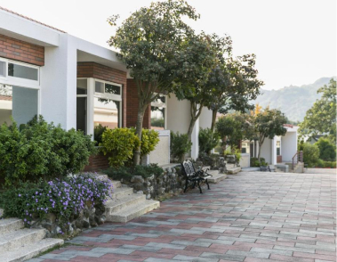
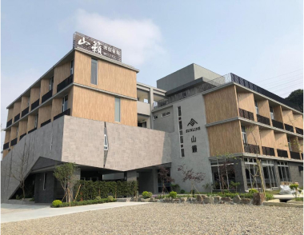
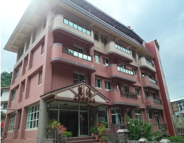
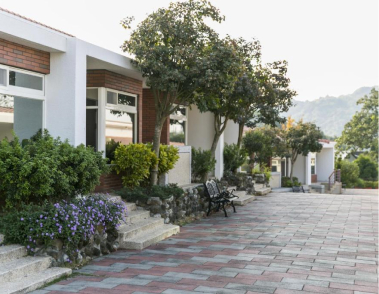
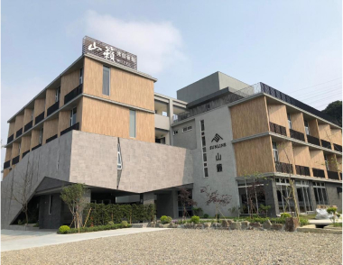
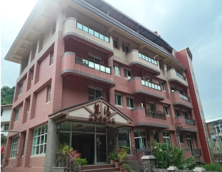

Attraction
観光名所
安平老街
「台湾の京都」の異名をとる、古都・台南、かつて台湾の首都であったことから、重要な史跡が点在し、ノスタルジックなムードが漂っています。17世紀に造られた台湾最古の街は現在、台湾レトロとも称され数々の掘り出し物やお土産、飲食店が立ち並び写真スポットとしても人気の高いエリアになっています。
露店巡りは日中ノスタルジックな撮影は夜が
おすすめ
赤崁楼
赤嵌楼（赤嵌樓）は台南中西区の代表的な古跡で、安平区の安平古堡と並んで台南の二大古跡になっています夜になると、赤嵌楼周辺には黄色いライトが灯り、古い建築物をより一層味わい深く演出します。前方の広場ではよく音楽会が催され、台南市民の夜の憩いの場になっています。赤嵌楼は、昼も夜も独特の魅力で楽しませてくれます。
遅い時間帯はライトアップも楽しめます
営業時間8:30～21:30
Gourmet
おすすめグルメ
グルメが有名な台湾において特に有名であり、台南でしか味わえないものをご紹介
Pick Up
ピックアップ
蓮と温泉の国 白河
きらびやかな都心や歴史情緒ある台湾そんな台湾のもう一つの楽しみ方が自然に囲まれ名がらの観光観光客の少ない所でゆっくり楽しみたい方におすすめ
温泉名関仔嶺温泉（グァンズーリン・ウェンチュエン）台湾4大温泉地の一つで白河周辺には数々のホテルがあり、温泉を楽しむことができます。このエリアは泥温泉が有名で国内外問わず女性に大人気
 





温泉宿は最新のホテルから老舗の旅館まで多種多様に揃っています

蓮の実の生産で台湾全土の3分の2の生産量を占める「蓮のふるさと」美しい白河で癒しの時間をお過ごしください